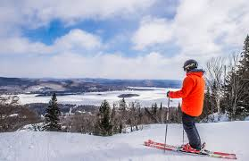
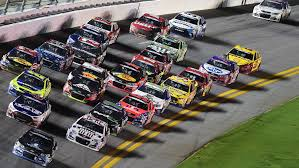
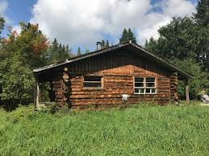

Je me présente
Mon nom est Daniel Auger et j'ai 54 ans
Mes principales caractéristiques sont :
Wikipedia Étudiant

Wikipedia Sport
Wikipedia Loisir
Wikipedia Rêve
Mes études...
Présentement j'étudie pour avoir un AEC en "Développement Web Front End" au Cégep de Trois-Rivières.
Wikipedia HTML
Wikipedia CSS3
Wikipedia JavaScript
The World's Largest WEB Developer Site W2Schools
StackOverFlow For developers, by developers

J'ai aussi un AEC en Technique de Programmation que j'ai suivis au Cégep de Victoriaville.
Wikipedia
Le langage RPG
Wikipedia Le langage Delphi
Wikipedia Le langage Turbo Pascal
Wikipedia Le langage Assembleur
Wikipedia Le langage Machine
Wikipedia Le langage Visual Basic
Wikipedia Le langage Visual Basic .Net
Wikipedia Le langage C
Wikipedia Le langage C++
J'ai aussi suivi un cours comme camionneur en équipement lourd et surdimensionné.
Transport Watson pour qui j'ai travaillé
Transprt Robert pour qui j'ai travaillé
Transport Chainé pour qui j'ai travaillé

J'ai aussi un AEC comme Technique Courtier en Valeur Immobilière au Cégep de St-Jean.
Le Permanent pour qui j'ai travaillé
REMAX pour qui j'ai travaillé

J'ai aussi un cours en Meuble et Gabarit, au Cégep de Victoriaville.
Cégep de
Vitoriaville ou je suis allé étudier
2
Retour au haut de page
Mes Sports préférés...

J'ai pratiqué le hockey durant de longue année dans des ligues de garages.
LPGQ où j'ai pratqué le hockey durant 13 ans
LNH Ligue Nationale de Hockey
LhJMQ Ligue de Hockey Junior Majeur du Québec

Je pratique depuis toujours et encore le ski alpin.
Québec Vacance tous les sites a visités


Je fais beaucoup de 4 roues et de la motoneige.
Québec Quad Association des clubs Quad
FCMQ Fédération des clubs motoneigistes du Québec

J'adore la course automobile.
Nascar toutes les séries
F1 Course Automobile
GP3R Grand-Prix de Trois-Rivières


Je pratique aussi la chasse à l'arbalète et la pêche.
Les Pourvoiries du Québec
Retour au haut de page
- Programmer en Informatique
- Travailler sur ma terre à bois
- Ecouter de bon films
- Recevoir le monde à souper
Retour au haut de page
Mon plus grand rêve...

À l'âge où je suis rendu, j'ai pas mal toujours réalisé mes rêves en m'amusant dans tout ce que je faisais.
Il en reste un encore, je crois, ça serait d'aller vivre sur ma terre à bois, mais ma femme ne veut pas
encore, même après beaucoup d'années.
Retour au haut de page